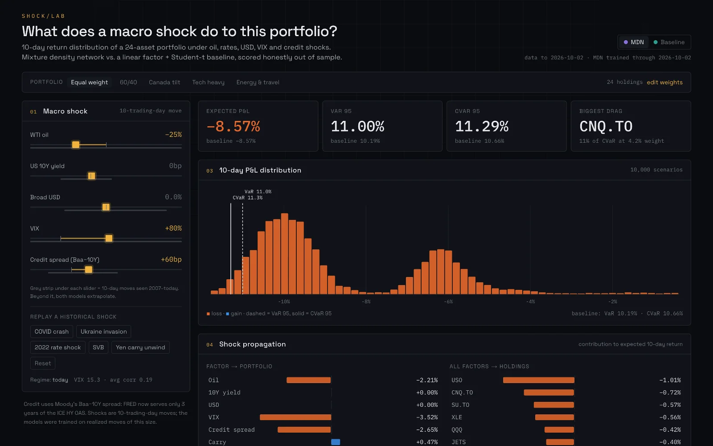
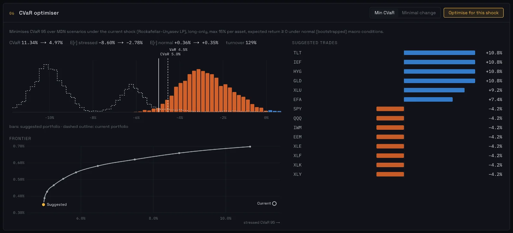

Shock Lab
What does a macro shock do to a portfolio, and which portfolio limits the damage?
A portfolio stress-testing engine that turns a macro shock, such as an oil spike or a jump in rates, into a 10-day return distribution for 24 assets, measures the tail risk, and builds a portfolio that limits it. The live demo runs both models and the optimizer entirely in your browser.

Data
- 24 assets: 19 US exchange-traded funds (ETFs) covering equities, sectors, Treasuries, high yield, gold, oil and airlines, plus five stocks listed on the Toronto Stock Exchange (TSX).
- Five macro factors from Federal Reserve Economic Data (FRED): West Texas Intermediate (WTI) oil, the 10-year Treasury yield, the broad US dollar index, the Chicago Board Options Exchange Volatility Index (VIX), and Moody's Baa minus 10-year Treasury credit spread.
- Daily data from 2007, built into 10-day windows.
- No look-ahead: every model is fit only on windows that ended before the evaluation date. Splits by date: training through 2017, validation 2018–2019, test 2020 onward, scored on non-overlapping windows.
Method
- Linear baseline: rolling 3-year ordinary least squares (OLS) factor betas with multivariate Student-t residuals.
- Neural model: a PyTorch Mixture Density Network (MDN) with five Gaussian components over all 24 asset returns, conditioned on the factor shock plus regime features (the VIX level and the 60-day average cross-asset correlation), trained on negative log-likelihood with early stopping and refit every year, walking forward.
- Risk engine: 95% Value at Risk (VaR), Conditional Value at Risk (CVaR, also called expected shortfall), each holding's contribution to CVaR, factor attribution, and replays of five historical shocks: the March 2020 pandemic crash, the invasion of Ukraine, the 2022 rate shock, the Silicon Valley Bank (SVB) failure and the August 2024 yen carry-trade unwind.
- Optimizer: Rockafellar–Uryasev CVaR minimization as a linear program in cvxpy: long-only, a 15% cap per asset, a minimum expected return, a minimal-turnover mode and a CVaR-versus-return frontier.
- Backtest: monthly walk-forward from January 2018 to October 2026, net of 10 basis points of transaction costs, against equal weight, 60/40 and minimum variance.
Results
| Measure | Linear baseline | Neural model (MDN) |
|---|---|---|
| Mean negative log-likelihood (lower is better) | −60.7 | −45.2 |
| Portfolio 95% VaR breach rate (target 5%) | 6.5% | 6.5% |
| Portfolio mean absolute error | 1.35% | 1.22% |
The walk-forward neural model is shown; the static version scored −47.6. The Kupiec test does not reject the 5% target (p = 0.39). The baseline had the best likelihood in all five historical events.
- Backtest, January 2018 to October 2026: the CVaR strategy built on the neural model's scenarios had a maximum drawdown of −17.3%, against −34.8% for equal weight and −21.3% for 60/40.
- Its compound annual growth rate (CAGR) was 7.2%, against 11.8% for equal weight, and its Sharpe ratio was 0.53, against 0.63 for equal weight and 0.61 for minimum variance.
What didn't work
- The neural model did not beat the linear baseline on likelihood, overall or in any of the five historical events.
- The CVaR strategy cut the worst drawdown but trailed equal weight on return, and trailed both equal weight and minimum variance on the Sharpe ratio.
- Data issues, documented in the repository: FRED now serves only three years of the Intercontinental Exchange (ICE) Bank of America high-yield spread, so the credit factor uses Moody's Baa minus 10-year spread instead; the negative WTI price of April 2020 is treated as missing.

Engineering
- A FastAPI service with Pydantic models and 28 pytest tests.
- An interactive Next.js and D3.js dashboard.
- The static GitHub Pages demo runs both models and the optimizer in the browser: a TypeScript port of the models, and the HiGHS solver compiled to WebAssembly.
Python · PyTorch · pandas · NumPy · SciPy · cvxpy (HiGHS) · FastAPI · Pydantic · pytest · Next.js · TypeScript · Tailwind CSS · D3.js · Framer Motion · WebAssembly · GitHub Actions